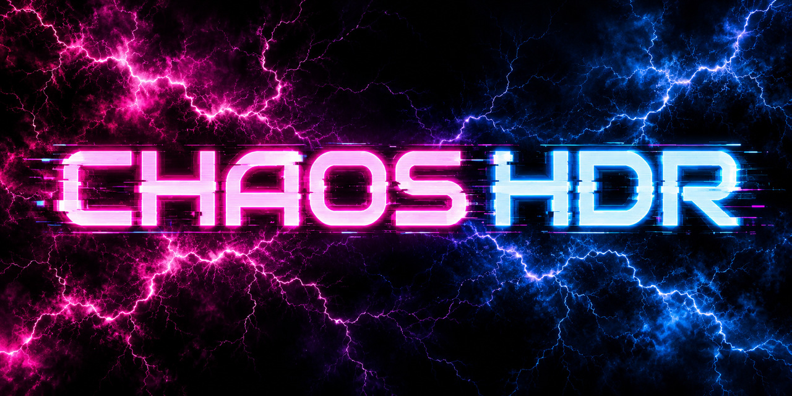

A different light.
The same game.
NVIDIA HDR and sharpening for your SDR games on KDE Plasma Wayland. Shape the picture from a custom neon sidebar, with low processing overhead and no game injection.
Experimental · Tested on CachyOS + KDE Plasma Wayland
Your picture.
Your kind of chaos.
Press Alt + Z. The sidebar slides in from the left, putting the picture in your hands.
- HDR and sharpening, independently.
- Adjust highlights, middle greys, contrast, saturation and fine detail. Keep the combination that works for you.
- Only the windows you approve.
- Chaos HDR processes window output through KWin. It does not inject code into your games.
- Make it yours. Keep it saved.
- Named profiles, a translucent panel, animated lightning and a glitching neon title. Reduce motion when you prefer.

Built to stay responsive.
Measured GPU processing time with HDR and sharpening enabled and the sidebar closed.
| Resolution | GPU time |
|---|---|
| 1440p 2560 × 1440 | 0.269 ms |
| 4K 3840 × 2160 | 0.490 ms |
Local synthetic tests of version 0.4.0, around 300 completed frames per mode. These measure GPU processing, not total input-to-display latency. Results vary by system. The 0.4.2 font fix leaves the HDR path unchanged; these timings have not been remeasured for 0.4.2.
Read the measurement detailsLet there be light.
One command. The latest release.
curl -fsSL https://github.com/chaosfox26/chaos-hdr/releases/latest/download/install.sh | bash
Before you install
You need a compatible NVIDIA RTX GPU and driver, KDE Plasma Wayland, and an HDR display with HDR enabled in KDE. Setup downloads dependencies and builds locally; system package setup may ask you to authenticate.
Know what is tested
Testing covers an existing CachyOS + KDE Plasma Wayland system. Other distributions and desktop environments, including GNOME, are untested. This version depends on KDE/KWin. Fresh-system installation remains unverified.